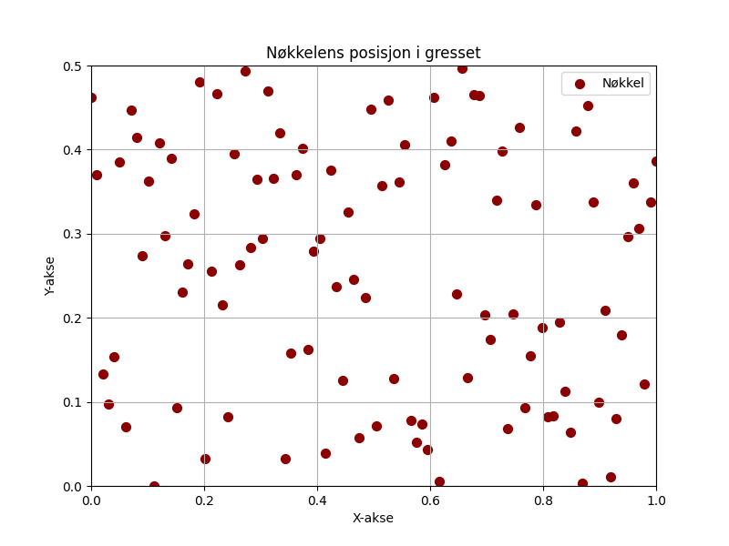

En rusten nøkkel i gresset lå, den visste ingen hvor den skulle gå. Den drømte om låser og glemte rom, mens høsten kom og hagen ble tom.

import matplotlib.pyplot as plt
import numpy as np
# Dikt
dikt = """
En rusten nøkkel i gresset lå,
den visste ingen hvor den skulle gå.
Den drømte om låser og glemte rom,
mens høsten kom og hagen ble tom.
"""
# Visuell representasjon av nøkkelens posisjon
x = np.linspace(0, 1, 100)
y = np.random.rand(100) * 0.5 # Nøkkelen er i gresset
plt.figure(figsize=(8, 6))
plt.scatter(x, y, s=50, color='darkred', label='Nøkkel')
plt.title('Nøkkelens posisjon i gresset')
plt.xlabel('X-akse')
plt.ylabel('Y-akse')
plt.grid(True)
plt.xlim(0, 1)
plt.ylim(0, 0.5)
plt.legend()
plt.savefig(output_path)
# Visuell representasjon av drømmerom (flate)
num_points = 50
x = np.random.rand(num_points) * 10
y = np.random.rand(num_points) * 10
z = x**2 + y**2 # Drømmerom som en overflate
plt.figure(figsize=(8, 6))
plt.plot_surface(x, y, z, cmap='viridis', alpha=0.8)
plt.title('Drømmerom (overflate)')
plt.xlabel('X-akse')
plt.ylabel('Y-akse')
plt.zlabel('Z-akse')
plt.savefig(output_path)
# Visuell representasjon av høstens komme (linje)
t = np.linspace(0, 2 * np.pi, 100)
x_høst = np.cos(t)
y_høst = np.sin(t)
plt.figure(figsize=(8, 6))
plt.plot(x_høst, y_høst, color='gray', linestyle='-', linewidth=2, label='Høsten')
plt.title('Høstens komme')
plt.xlabel('X-akse')
plt.ylabel('Y-akse')
plt.xlim(-1, 1)
plt.ylim(-1, 1)
plt.grid(True)
plt.legend()
plt.savefig(output_path)execution_ok=False fallback_used=False image_ok=True